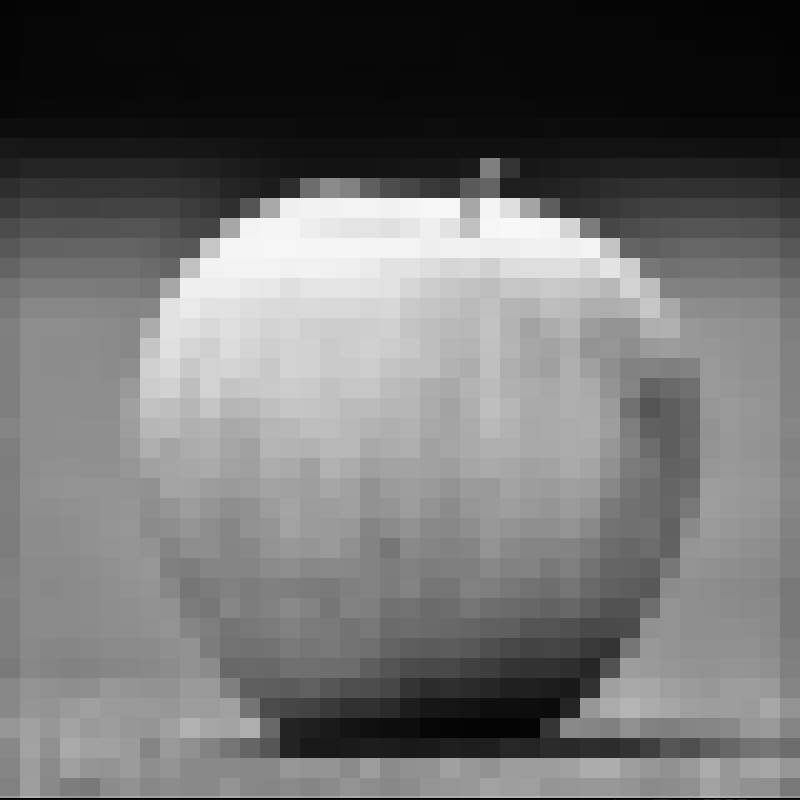
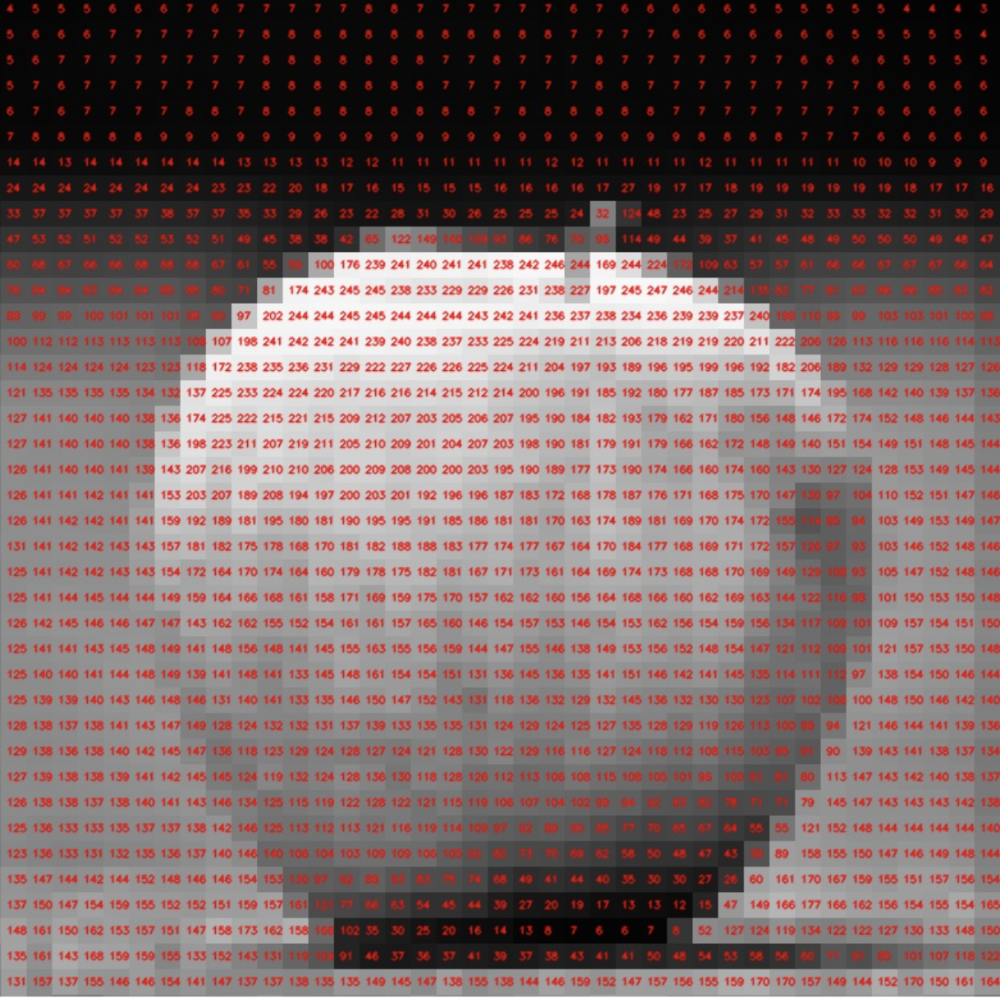
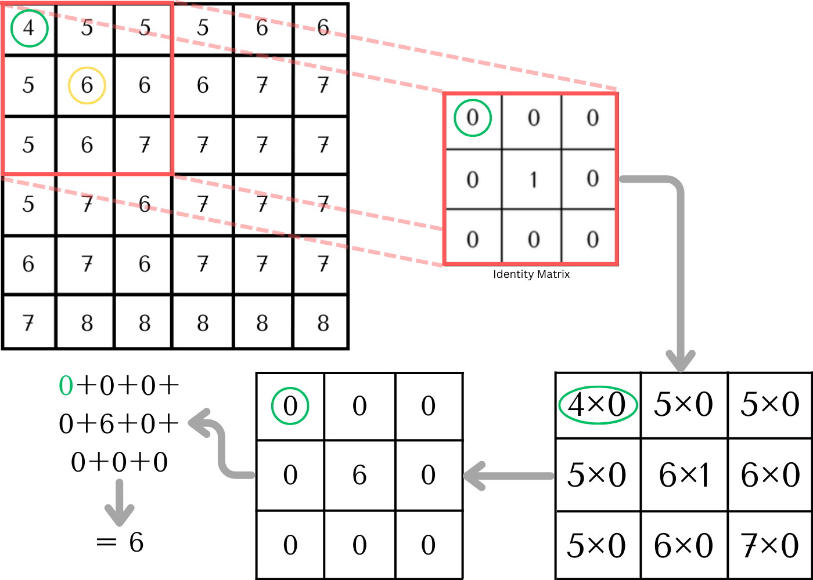
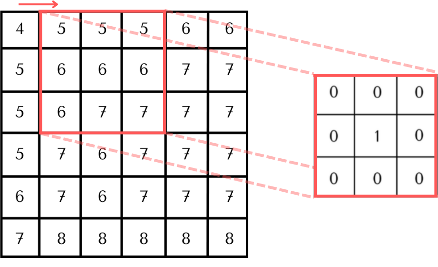
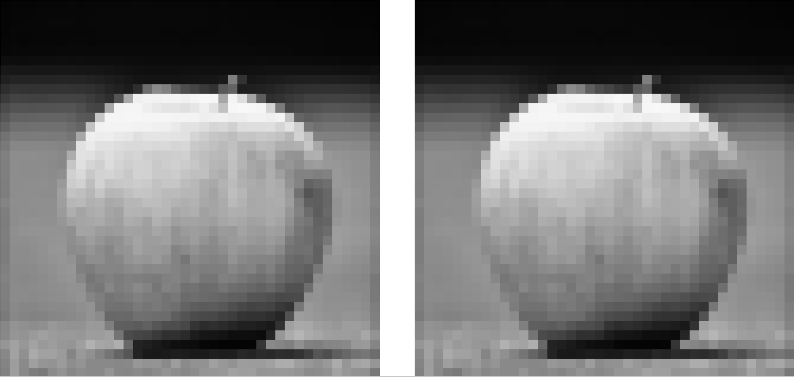
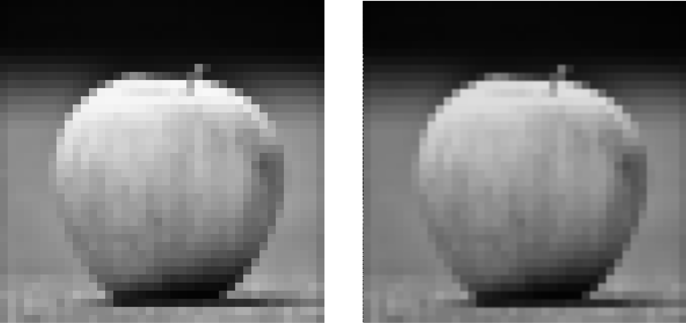
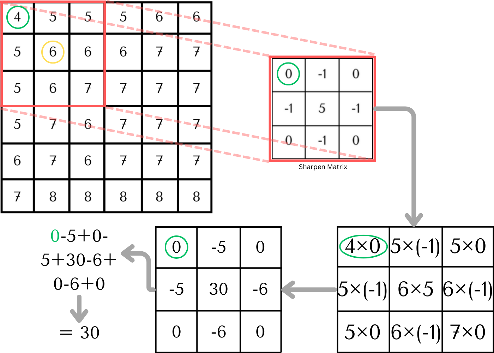
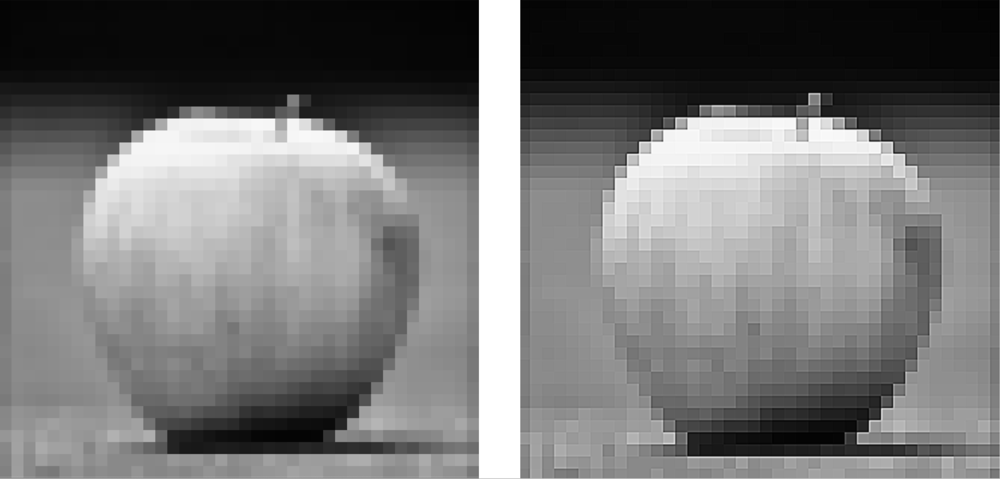
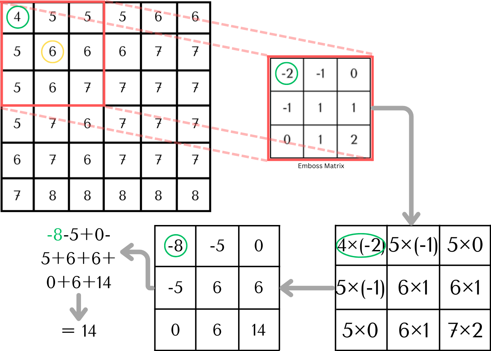
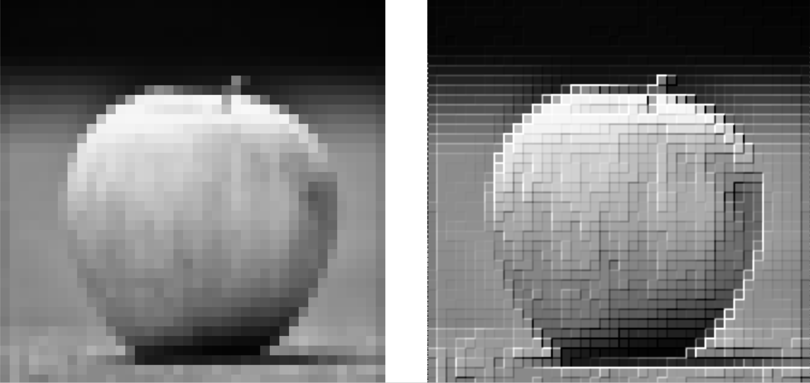

Scroll through any social media feed today, and you'll see a parade of photos, each touched up with what we casually term "filters." I've always been fascinated by the mechanics behind these visual tweaks. The day I understood the math and theory of filters was the day my whole perspective changed. In simple terms, these filters are just kernels. An image? Think of it as a grid, each cell filled with numbers that represent shades of colors (true for gray scale images). A color image has 3 channels (Red, Green and Blue) and hence to keep things simple, I will be using gray scaled images. And the process of applying on a filter? It's all about altering these numbers in systematic ways. Trust me, it’s not as complicated as it sounds! In this blog, we're diving into the basics – exploring four fundamental kernel types: identity, blur, sharpen, and emboss. Let’s dive in!
Image Kernels in Computational Vision: A Mathematical Study and OpenCV implementation
Theory
1. Identity Kernel
The Identity Kernel retains the image's original form, making no
changes when applied. One might wonder about its importance. Its
importance becomes clear when realizing that the Identity Kernel
serves as a basic introduction to the world of kernels. Through it,
one can learn the fundamental process of kernel application, paving
the way to understand more advanced kernels. To illustrate, here is a
greyed-out, pixelated image of an apple:

Image 1. Low resolution grayscale image of an apple (Image by author)
Here's an image that's 39×39 pixels in size. Every pixel in it has a value between 0 and 255, indicating its shade. A value closer to 0 means it's more black, while 255 indicates it's white. Here are the pixel values for this image:

Image 2. Numerical representation of the image (Image by author)
Let's break down the Identity Kernel. Start with a segment of an image, represented by a 6×6 matrix. Focus on the top-left 3×3 subset of this matrix. The Identity Kernel itself is a 3×3 matrix, distinguished by its center value of one, while every other value is zero. Applying this kernel is straightforward: multiply each element of the 3×3 segment by its corresponding element in the kernel. Once multiplied, sum up all these values. With the Identity Kernel, the sum is simply the center value from our initial 3×3 matrix segment. This calculated sum is the updated pixel value for the central position in the top-left 3×3 subset of this matrix (within the yellow circle).
Following this pattern, we move horizontally across the matrix. Once a row is completed, we drop down and start on the next row below. When we finally reach and process the bottom right 3×3 segment, we have the transformed image. Now, take a look at both the original and transformed images side by side. Note that for the identity matrix, there is no difference in the
original and transformed images.


Image 3. A part of the convolution process for identity kernel in mathematical terms (Image by author)
Next, we shift one step to the right and repeat the process. Here's how it unfolds:

Image 4. Next step of the convolution process in mathematical terms (Image by author)

Image 5. Original and transformed images (Image by author)
2. Blur Kernel
All kernels essentially follow the same logic; it's the values inside that make the magic happen. While we've been discussing 3×3 matrices, kernels can come in various sizes—think 7×7, 9×9, or even bigger. These values can also be modified based on specific applications to achieve different effects. The blur kernel, if I talk about the box blur or the average blur, when based on a 3×3 matrix, assigns an equal weight of 1/9 (9 cells in a 3×3 matrix, hence 1/9) to each cell. This means each pixel gets an equal share of the surrounding pixels' values. Starting at the top left corner and moving methodically to the bottom right, we apply this kernel to create that soft, blurred effect. Here's a deeper look at how the box blur operates:

Image 7. Original and transformed images (Image by author)
3. Sharpen Kernel
Moving on to the sharpen kernel, this kernel is used when we aim to highlight details. Rather than evening out pixel values like the blur kernel, the sharpen kernel amplifies the contrast. The center pixel's value typically gets a boost, making it stand out from its neighbors. This contrast enhancement is what gives the image its sharper appearance. Let’s have a closer look:

Image 8. A part of the convolution process for sharpen kernel in mathematical terms (Image by author)
If you are wondering if we need to start from the top left corner and trace the above process to the bottom right corner, you are thinking in the right direction. So, once the overall process is done, we have our output image. Here’s a comparison:

Image 9. Original and transformed images (Image by author)
4. Emboss Kernel
Let’s now move on to the final kernel, the emboss kernel. I find this one really interesting because it adds depth and texture to images, almost giving them a three-dimensional feel. Instead of just adjusting brightness or blurring details, the emboss kernel emphasizes the transitions between light and dark regions in the image. This results in a raised or "embossed" effect, much like you'd find on stamped leather or a fancy invitation card. It's a fantastic tool when you want to spotlight the contours and subtle details of an image. Here’s how exactly it works:

Image 10. A part of the convolution process for emboss kernel in mathematical terms (Image by author)
Once the kernel passes through the entire image, we have the final output. The embossed effect can be clearly seen here:

Image 11. Original and transformed images (Image by author)
Install opencv-python using pip if you haven't already:
import cv2
import numpy as np
# Load the image
image = cv2.imread('path_to_your_image.jpg', cv2.IMREAD_GRAYSCALE)
# Define the emboss kernel
kernel = np.array([[-2, -1, 0],
[-1, 1, 1],
[0, 1, 2]])
# Apply the kernel to the image
embossed_image = cv2.filter2D(image, -1, kernel)
# Ensure all pixel values stay within 0-255 after applying the filter
embossed_image = cv2.normalize(embossed_image, None, 0, 255, cv2.NORM_MINMAX, dtype=cv2.CV_8U)
# Save the result
cv2.imwrite('embossed_image.jpg', embossed_image)
# Optionally, to view the image using OpenCV
cv2.imshow('Embossed Image', embossed_image)
cv2.waitKey(0)
cv2.destroyAllWindows()
Modify the ‘kernel’ as required. I used the blur kernel on one of my clicks of buildings in Manhattan. Below is the original and animation of the blur happening starting from the top left corner of the image to the bottom right corner.
Image 12. High resolution image to implement the blur kernel using OpenCV (Image by author)
Image 13. (Animation) Pixel by pixel convolution in action (Image by author)
Conclusion
CNNs are a very powerful way for a machine to understand an image. We've looked at different models like LeNet, AlexNet, and ResNet, each playing a unique role in image processing. It's fascinating to see how these networks, through layers and filters, can identify everything from pets in photos to street signs. Now that you understand how it works, you can appreciate the math behind the CNNs when you see a self-driving car next time.